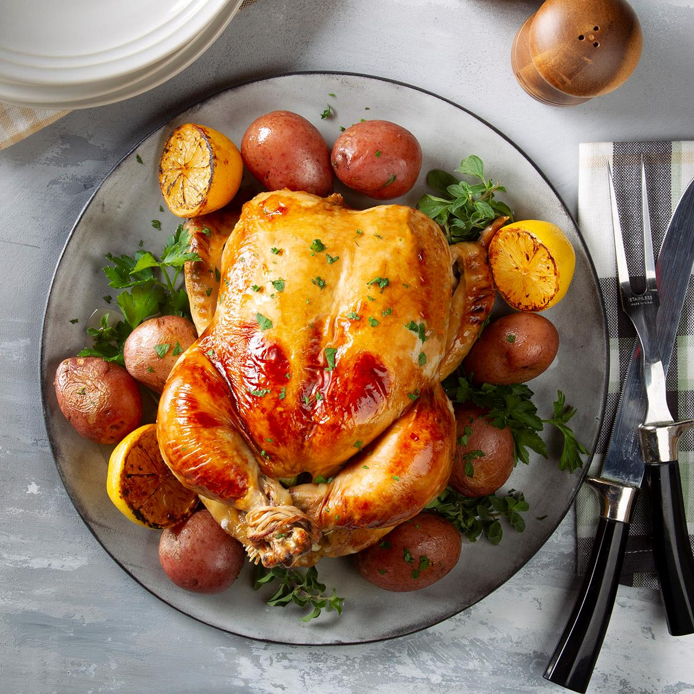

Roast Chicken with Potatoes

Description
This chicken recipe is an easy one pan dinner that you can cook in the oven.
Ingredients
- 1 Whole Chicken (3-5 pounds)
- 1 Lemon
- 20 Cloves of Garlic/li>
- 2 Sprigs of Thyme
- 5-6 Ykon Gold Potatoes
- 1/4 Cup of Olive Oil
Steps
- Preheat oven to 350 degrees Fahrenheit amd prepare a sheet pan or large oven safe pan. Remove any giblets inside the whole chicken and rinse with cold water.
- Peel garlic cloves and quarter lemon. Stuff Chicken with garlic, lemon, and thyme. Season chicken with half of the olive oil and salt.
- Scrub the potatoes under cold running water. Cut the potatoes in half lengthwise and place on pan, cut side down. Season with the rest of the olive oil and salt to taste.
- Place the chicken in the center of the pan over the cut potatoes, breast side up. Bake at 350 degrees for 1 hour and 15 minutes.
- Raise the temperature to 425 degrees and bake for another 20-30 minutes until crispy.
- Rest for 10 minutes, then cut the chicken as desired. Squeeze the lemons to release the juice. Serve with pan drippings.